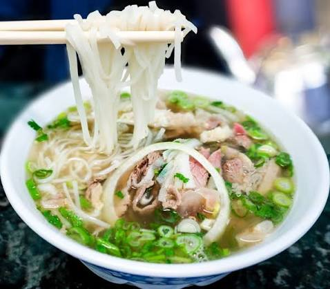
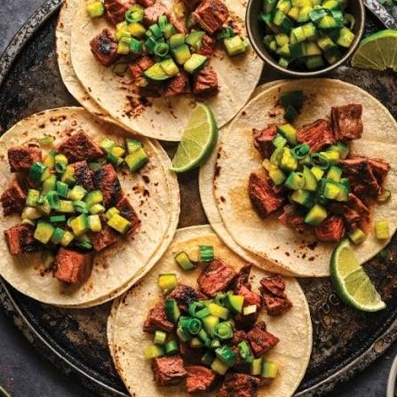

A TASTE OF MY FAVORITES
My Favorite Foods
Three favorites. Endless flavor.

PHO
STEAK TACOS QUESO
QUESO
This website is about Diya Varma's favorite foods. While my food fixation often changes, these foods are always a go to for me.
Three favorites. Endless flavor.

PHO
STEAK TACOS
QUESO